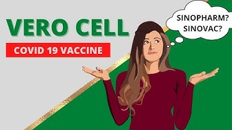

Thông tin các loại vaccine đang được sử dụng ở Việt Nam
Đến thời điểm hiện nay, tại Việt Nam đã có 8 loại vắc-xin phòng COVID-19
được Bộ Y tế cấp phép sử dụng. Các loại vắc-xin được phê duyệt sử dung
hiện nay gồm: AstraZeneca, Gam-COVID-Vac (tên khác là SPUTNIK V), Vero
Cell, Comirnaty của Pfizer/BioNTech, Vắc xin Spikevax (Tên khác là
Moderna), vắc-xin Janssen, vắc-xin Hayat-Vax và vắc-xin Abdala.
1. Astrazeneca
Vắc-xin aAstraZeneca do Tập đoàn AstraZeneca sản xuất đã được cấp
phép sử dụng khẩn cấp tại 181 quốc gia, vùng lãnh thổ và được Tổ
chức Y tế thế giới (WHO) đưa vào danh sách sử dụng khẩn cấp.
AstraZeneca được Việt nam phê duyệt ngày 01/02/2021 và triển khai
tiêm chủng từ tháng 3/2021, hiện đang có số lượng sử dụng nhiều nhất
tại Việt Nam.Đây là loại vắc xin sản xuất theo công nghệ vector, sử dụng 2
liều cách nhau 8-12 tuần.
2. SputnikV
Vắc xin Gam-COVID-Vac (tên khác là SPUTNIK V) do Viện Nghiên cứu
Gamaleya, Nga sản xuất đã được cấp phép sử dụng tại 70 quốc gia,
vùng lãnh thổ.
Tại Việt Nam, vaccine Sputnik V đã được Bộ Y tế phê duyệt có điều
kiện vaccine cho nhu cầu cấp bách trong phòng, chống dịch COVID-19
vào ngày 23/3/2021. Đây là vắc xin sử dụng công nghệ tái tổ hợp hợp
mang gen mã hóa protein S của SARS-CoV-2. Vắc xin được tiêm 2 liều
cách nhau 3 tuần.

3. Vero Cell
Vắc xin Vero Cell do Sinopharm phát triển và Beijing Institute of
Biological Products Co. Ltd - Trung Quốc sản xuất, đã được cấp phép
sử dụng tại 64 quốc gia, vùng lãnh thổ, đã được Tổ chức Y tế thế
giới đưa vào danh sách sử dụng khẩn cấp.
Ngày 3/6/2021, vắc-xin Vero Cell đã được Bộ Y tế phê duyệt có điều
kiện vaccine cho nhu cầu cấp bách trong phòng, chống dịch COVID-19.
Vắc xin này sản xuất theo công nghệ bất hoạt vi rút, tiêm 2 liều
cách nhau 3-4 tuần.
4. Pfizer
Vắc xin Comirnaty của Pfizer/BioNTech đã được cấp phép sử dụng tại
111 quốc gia và vùng lãnh thổ và được Tổ chức Y tế thế giới đưa vào
danh sách sử dụng khẩn cấp.
Vắc xin này đã được Bộ Y tế phê duyệt có điều kiện cho nhu cầu cấp
bách trong phòng, chống dịch COVID-19 vào ngày 16/6/2021. Vắc xin
được sản xuất theo công nghệ mRNA, sử dụng tiêm 2 liều cách nhau 3-4
tuần. Đến ngày 23/8/2021, Cục Quản lý thuốc và thực phẩm Hoa Kỳ
(FDA) chính thức đưa ra chấp thuận hoàn toàn đối với vaccine
Pfizer-BioNTech trong phòng ngừa COVID-19 ở những người từ 16 tuổi
trở lên.
5. Moderna
Vắc xin Spikevax (Tên khác là Moderna) do Moderna sản xuất đã được
cấp phép sử dụng tại 64 quốc gia, vùng lãnh thổ và được Tổ chức Y tế
thế giới đưa vào danh sách sử dụng khẩn cấp
Vắc-xin này cũng được sản xuất dựa trên công nghệ mRNA, sử dụng 2
liều cách nhau 4 tuần. Bộ Y tế đã phê duyệt có điều kiện cho nhu cầu
cấp bách trong phòng, chống dịch COVID-19 cho loại vắc-xin này vào
ngày 28/6/2021.
6. Janssen
Vắc xin Janssen do Janssen Pharmaceutica NV (Bỉ) và Janssen
Biologics B.V (Hà Lan) sản xuất được cấp phép sử dụng tại 56 quốc
gia, vùng lãnh thổ và được Tổ chức Y tế thế giới đưa vào danh sách
sử dụng khẩn cấp.
Vắc xin được sản xuất bằng công nghệ véc-tơ vi-rút, sử dụng 1 liều
duy nhất. Hiện nay, Việt Nam chưa tiếp nhận loại vắc xin này nhưng
Bộ Y tế đã phê duyệt có điều kiện cho nhu cầu cấp bách trong phòng,
chống dịch COVID-19 đối với loại vắc-xin này vào ngày 15/7/2021.
7. Hayat
Vắc-xin vaccine Hayat - Vax do Công ty TNHH Viện Sinh phẩm Bắc Kinh
thuộc Tập đoàn Biotec Quốc gia Trung Quốc (CNBG), Trung Quốc, sản
xuất bán thành phẩm.
Vắc xin này được đóng gói sơ cấp, thứ cấp và xuất xưởng tại Julphar
(Gulf Pharmaceutical Industries) - Các tiểu Vương quốc Ả rập thống
nhất. Vaccine Hayat - Vax mỗi liều 0,5 ml chứa 6.5 đơn vị kháng
nguyên SARS-CoV-2 (tế bào vero) bất hoạt, bào chế ở dạng hỗn dịch
tiêm. Vaccine được đóng gói hộp một lọ chứa một liều 0,5 ml và hộp
một lọ chứa 2 liều, mỗi liều 0,5 ml. Bộ Y tế đã có quyết định phê
duyệt có điều kiện cho nhu cầu cấp bách trong phòng, chống dịch bệnh
COVID-19 đối với vắc-xin này vào ngày 10/9/2021. Liều tiêm đang chờ
Bộ Y tế cập nhật hướng dẫn.
8. Abdala
Vắc-xin Abdala được sản xuất thành phẩm tại Công ty AICA Laboraries,
Base Business Unit (BBU) AICA - Cuba và được xuất bán thành phẩm,
đóng gói cấp 2 tại Trung tâm Kỹ thuật Di truyền và Công nghệ Sinh
học (CIGB) - Cuba.
Vắc-xin Abdala mỗi liều 0,5ml chứa 50 mcg vắc-xin protein tái tổ hợp
chứa vùng liên kết với thụ thể (RBG) của vi-rút SARS-CoV-2, bào chế
ở dạng hỗn dịch tiêm bắp. Vắc-xin được đóng gói hộp 10 lọ, mỗi lọ
chứa 10 liều, mỗi liều 0,5ml. Bộ Y tế đã phê duyệt có điều kiện
vắc-xin cho nhu cầu cấp bách trong phòng, chống dịch bệnh COVID-19
đối với loại vắc-xin này vào ngày 17/9/2021.